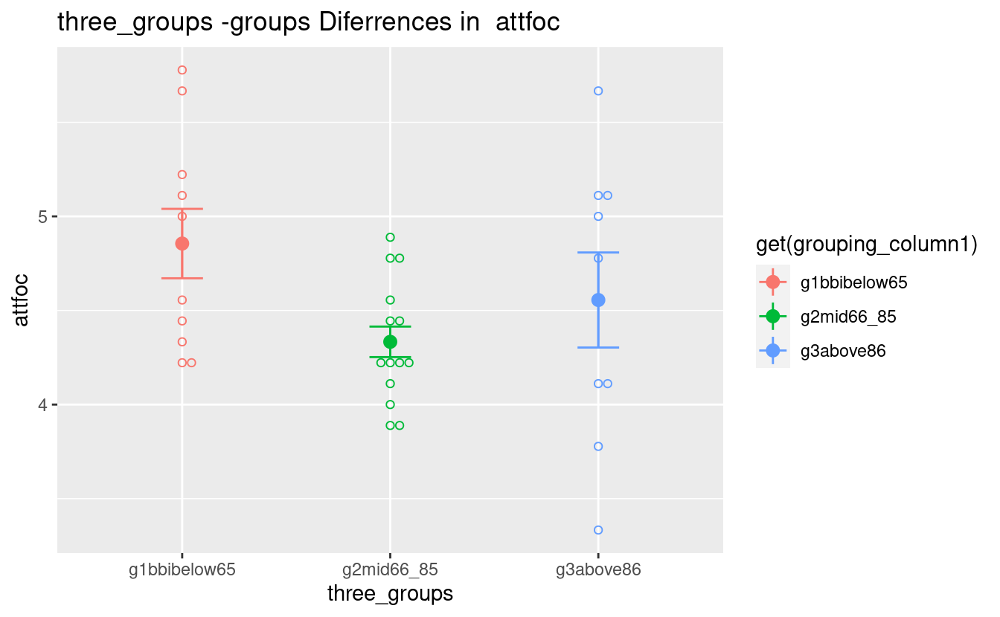
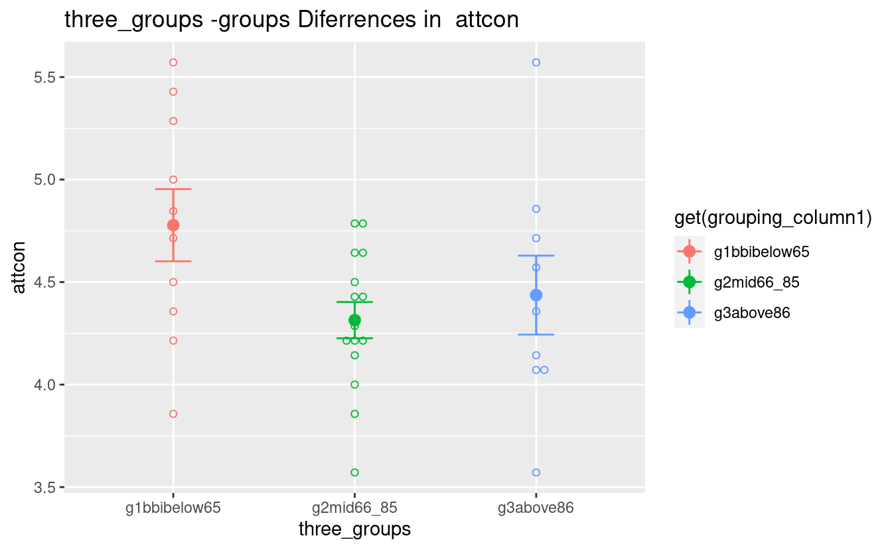
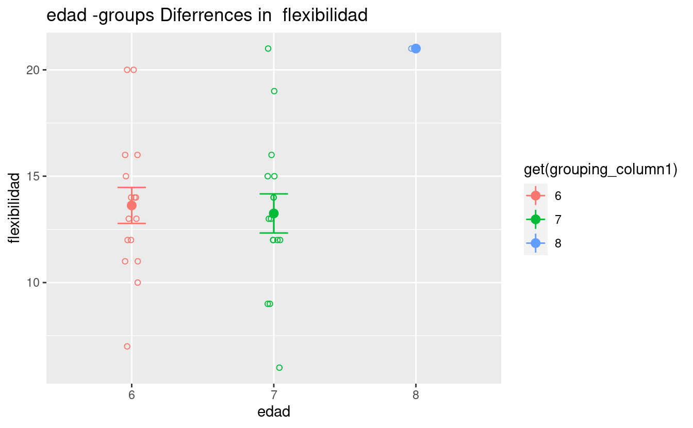
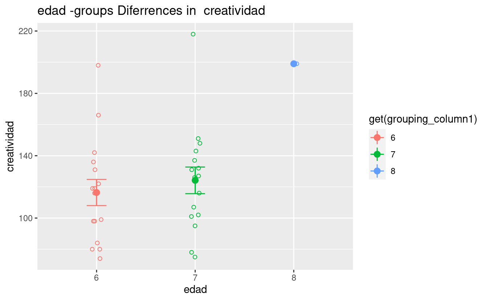

Significant differences among groups
Divided by percentiles
- Two groups above and below 70 percentile
- Three groups with 55 and 80 percentiles
Percentile-groups Differences in Raven
#> [1] "=== NO SIGNIFICANT RESULTS ==="Percentile-groups Differences in Subdimensions
#> $fea
#> $fea$median_grp
#> [1] 0.04427987
#>
#>
#> $inh
#> $inh$median_grp
#> [1] 0.01145101
#>
#>
#> [1] "fea median_grp"
#> [1] "inh median_grp"
#> [1] "=== GROUPS DESCRIPTIVE STATISTICS ==="
#> # A tibble: 2 × 2
#> median_grp mean
#> <fct> <dbl>
#> 1 g1below75 4.08
#> 2 g2above75 4.51
#> [1] "=== GROUPS DESCRIPTIVE STATISTICS ==="
#> # A tibble: 2 × 2
#> median_grp mean
#> <fct> <dbl>
#> 1 g1below75 5.05
#> 2 g2above75 4.54
#> [[1]]
#>
#> [[2]]
Percentile-groups Differences in the three broad dimensions
#> $CE
#> $CE$median_grp
#> [1] 0.01972686
#>
#>
#> [1] "CE median_grp"
#> [1] "=== GROUPS DESCRIPTIVE STATISTICS ==="
#> # A tibble: 2 × 2
#> median_grp mean
#> <fct> <dbl>
#> 1 g1below75 4.94
#> 2 g2above75 4.66
#> [[1]]
Results from Analysis of Differences Among Groups
- Categorical Variables are used as predictors
- Torrance Numeric Variables are used as responses
Torrance Percentiles
#> $perc_originalidad
#> $perc_originalidad$grupo
#> .x2
#> 0.05038873
#>
#> $perc_originalidad$rango
#> .x4
#> 0.06297054
#>
#>
#> $perc_fluidez
#> $perc_fluidez$edad
#> .x8
#> 0.06581025
#>
#>
#> $perc_creatividad
#> $perc_creatividad$rango
#> .x4
#> 0.050447
#>
#>
#> [1] "perc_originalidad grupo"
#> [1] "perc_originalidad rango"
#> [1] "perc_fluidez edad"
#> [1] "perc_creatividad rango"
#> [1] "=== GROUPS DESCRIPTIVE STATISTICS ==="
#> # A tibble: 4 × 2
#> grupo mean
#> <fct> <dbl>
#> 1 1 60.2
#> 2 2 84.3
#> 3 3 65.1
#> 4 4 77.2
#> [1] "=== GROUPS DESCRIPTIVE STATISTICS ==="
#> # A tibble: 4 × 2
#> rango mean
#> <fct> <dbl>
#> 1 2 71.2
#> 2 3 68.5
#> 3 4 51.8
#> 4 5 71
#> [1] "=== GROUPS DESCRIPTIVE STATISTICS ==="
#> # A tibble: 3 × 2
#> edad mean
#> <fct> <dbl>
#> 1 6 58.8
#> 2 7 64.9
#> 3 8 97
#> [1] "=== GROUPS DESCRIPTIVE STATISTICS ==="
#> # A tibble: 4 × 2
#> rango mean
#> <fct> <dbl>
#> 1 2 78.1
#> 2 3 74.8
#> 3 4 61
#> 4 5 75
#> [[1]]#>
#> [[2]]#>
#> [[3]]#>
#> [[4]]Torrance Partials
#> $elab1
#> $elab1$grupo
#> .x4
#> 0.04169034
#>
#>
#> $orig2
#> $orig2$rango
#> .x4
#> 0.02103123
#>
#>
#> $flui2
#> $flui2$rango
#> .x4
#> 0.009731103
#>
#>
#> $orig3
#> $orig3$grupo
#> .x4
#> 0.01866077
#>
#>
#> [1] "elab1 grupo"
#> [1] "orig2 rango"
#> [1] "flui2 rango"
#> [1] "orig3 grupo"
#> [1] "=== GROUPS DESCRIPTIVE STATISTICS ==="
#> # A tibble: 4 × 2
#> grupo mean
#> <fct> <dbl>
#> 1 1 1.77
#> 2 2 1.33
#> 3 3 2.44
#> 4 4 3.4
#> [1] "=== GROUPS DESCRIPTIVE STATISTICS ==="
#> # A tibble: 4 × 2
#> rango mean
#> <fct> <dbl>
#> 1 2 35.5
#> 2 3 38.6
#> 3 4 23
#> 4 5 40
#> [1] "=== GROUPS DESCRIPTIVE STATISTICS ==="
#> # A tibble: 4 × 2
#> rango mean
#> <fct> <dbl>
#> 1 2 9
#> 2 3 9.08
#> 3 4 6.6
#> 4 5 10
#> [1] "=== GROUPS DESCRIPTIVE STATISTICS ==="
#> # A tibble: 4 × 2
#> grupo mean
#> <fct> <dbl>
#> 1 1 27.2
#> 2 2 33.7
#> 3 3 31.9
#> 4 4 47.2
#> [[1]]#>
#> [[2]]
#>
#> [[3]]
#>
#> [[4]]Torrance Totals (Aggregated Variables)
-
Only marginally significant, p < 0.10, differences
#> $originalidad #> $originalidad$escuela #> [1] 0.05726995 #> #> $originalidad$grupo #> .x2 .x4 #> 0.03039469 0.03787579 #> #> $originalidad$edad #> .x8 #> 0.02026583 #> #> #> $fluidez #> $fluidez$grupo #> .x2 .x4 #> 0.09268328 0.03174777 #> #> $fluidez$edad #> .x8 #> 0.02982713 #> #> #> $flexibilidad #> $flexibilidad$edad #> .x8 #> 0.0519162 #> #> #> $creatividad #> $creatividad$grupo #> .x2 .x4 #> 0.08185418 0.06671491 #> #> $creatividad$edad #> .x8 #> 0.0246007 #> #> #> [1] "originalidad escuela" #> [1] "originalidad grupo" #> [1] "originalidad edad" #> [1] "fluidez grupo" #> [1] "fluidez edad" #> [1] "flexibilidad edad" #> [1] "creatividad grupo" #> [1] "creatividad edad" #> [1] "=== GROUPS DESCRIPTIVE STATISTICS ===" #> # A tibble: 2 × 2 #> escuela mean #> <fct> <dbl> #> 1 1 66.8 #> 2 2 83.8 #> [1] "=== GROUPS DESCRIPTIVE STATISTICS ===" #> # A tibble: 4 × 2 #> grupo mean #> <fct> <dbl> #> 1 1 66.8 #> 2 2 101 #> 3 3 74.7 #> 4 4 92 #> [1] "=== GROUPS DESCRIPTIVE STATISTICS ===" #> # A tibble: 3 × 2 #> edad mean #> <fct> <dbl> #> 1 6 73.9 #> 2 7 76.9 #> 3 8 134 #> [1] "=== GROUPS DESCRIPTIVE STATISTICS ===" #> # A tibble: 4 × 2 #> grupo mean #> <fct> <dbl> #> 1 1 15.5 #> 2 2 21 #> 3 3 16.3 #> 4 4 21 #> [1] "=== GROUPS DESCRIPTIVE STATISTICS ===" #> # A tibble: 3 × 2 #> edad mean #> <fct> <dbl> #> 1 6 16.3 #> 2 7 17.6 #> 3 8 28 #> [1] "=== GROUPS DESCRIPTIVE STATISTICS ===" #> # A tibble: 3 × 2 #> edad mean #> <fct> <dbl> #> 1 6 13.6 #> 2 7 13.2 #> 3 8 21 #> [1] "=== GROUPS DESCRIPTIVE STATISTICS ===" #> # A tibble: 4 × 2 #> grupo mean #> <fct> <dbl> #> 1 1 111. #> 2 2 151. #> 3 3 117. #> 4 4 143. #> [1] "=== GROUPS DESCRIPTIVE STATISTICS ===" #> # A tibble: 3 × 2 #> edad mean #> <fct> <dbl> #> 1 6 116. #> 2 7 124. #> 3 8 199 #> [[1]]
#> #> [[2]]
#> #> [[3]]#> #> [[4]]#> #> [[5]]#> #> [[6]]
#> #> [[7]]
#> #> [[8]]